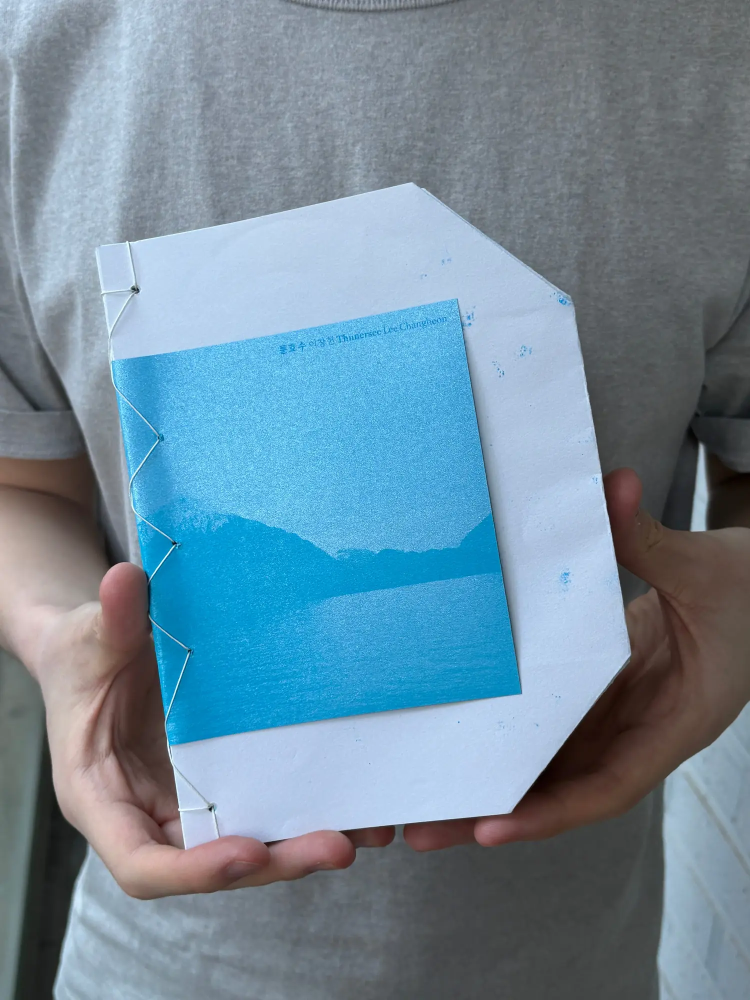
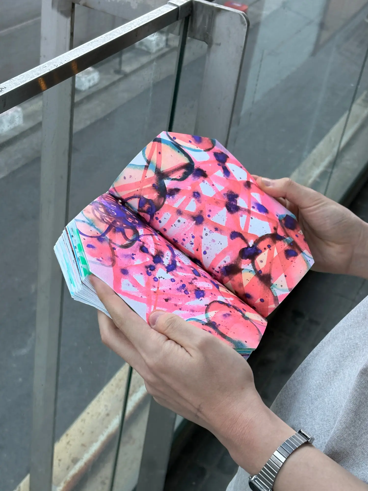
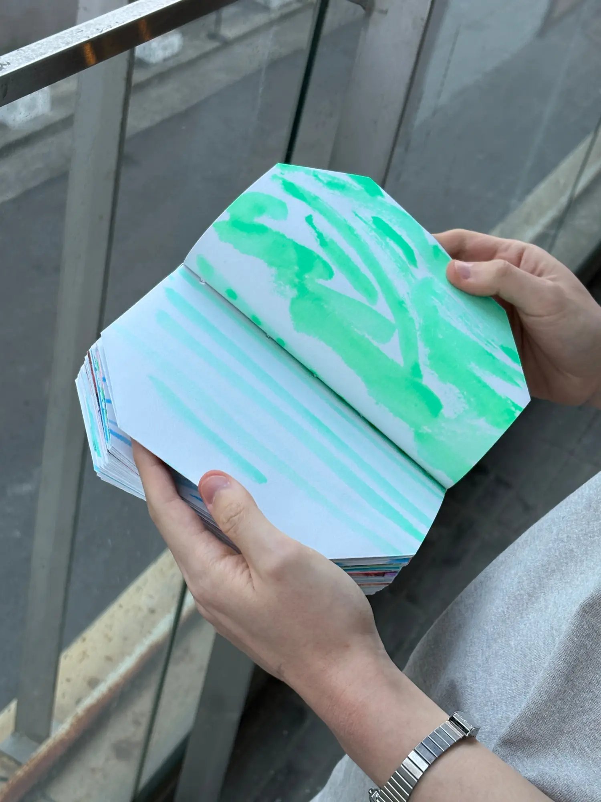
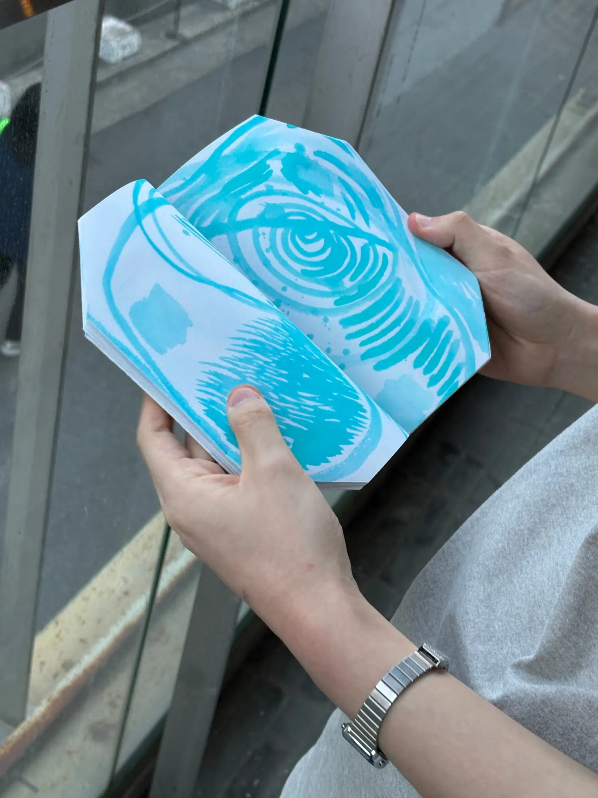
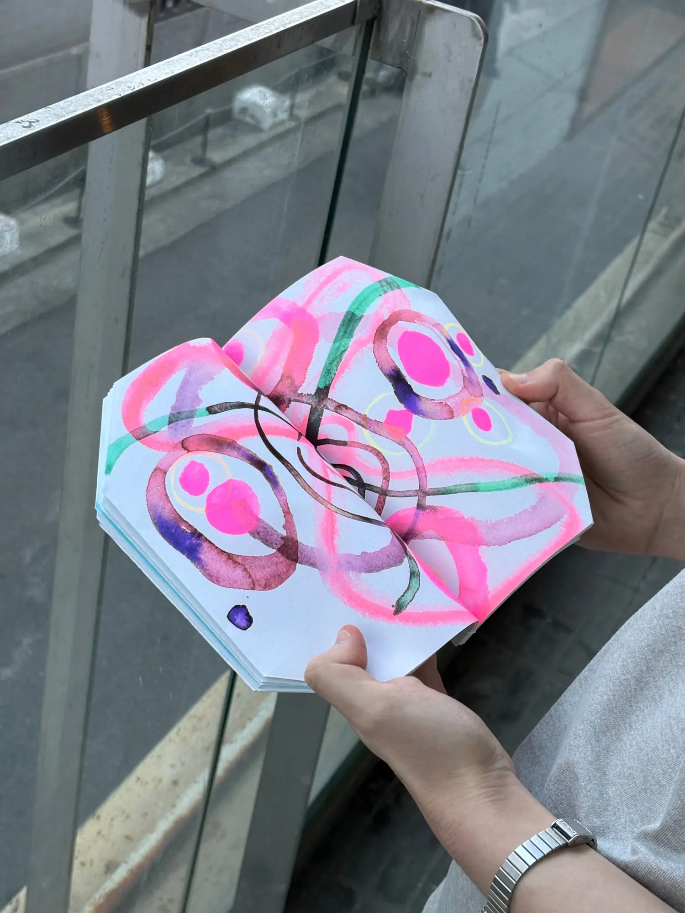
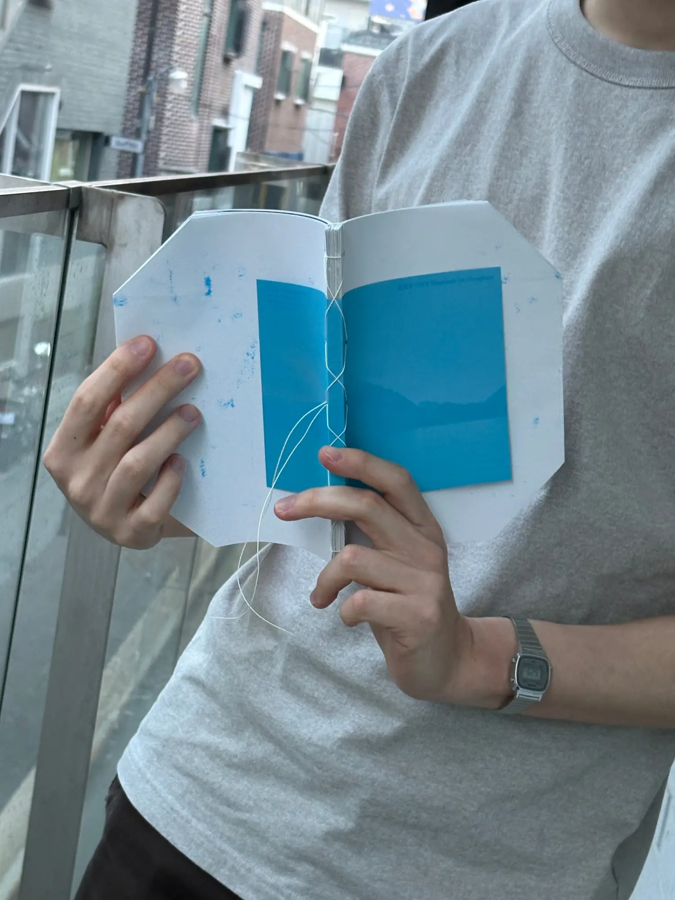
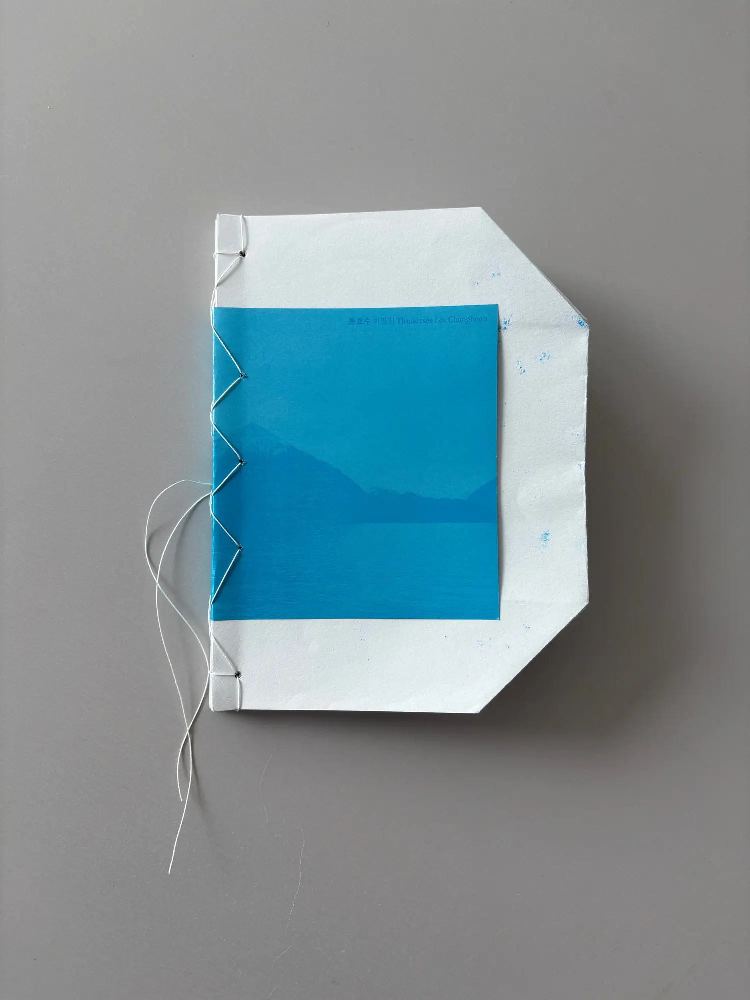
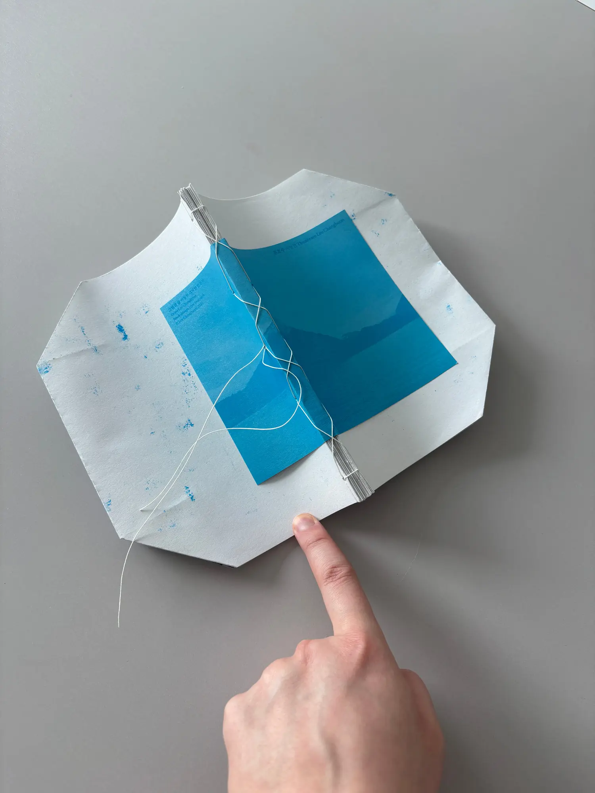

툰호수 Thunersee

이창헌 작가가 그린 드로잉을 모아 편집하고, 그래픽을 재해석해 책으로 엮었습니다. 그는 스위스의 툰호수에 가서 세계 전쟁 때 버려진 철제 무기가 호수의 터키블루 색을 만든다는 속설을 떠올리곤 물 아래에 숨겨진 무기를 상상하며 수채화를 그렸습니다. 그 드로잉을 인쇄로, 책으로 어떻게 나타낼 수 있을 지 고민했습니다. 뭔가 숨겨진다는 특성을 발견했고, 따라서 에세이를 45°로 기울인 글줄로 배치한 다음, 그 부분을 접어넣어 보이지 않게 숨겼습니다.






